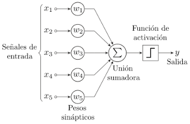
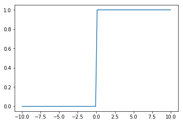
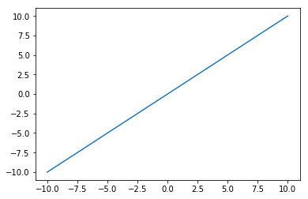
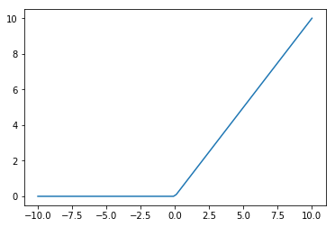
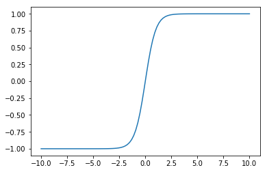
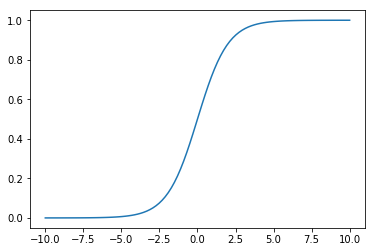

Funciones de activación para un perceptron
Posted on Tue 13 February 2018 in Tutorial Python • 4 min read
En el artículo (introducción al perceptron), se muestra el perceptron con la función de activación que en la figura es una onda cuadrada, pero puede ser también otro tipo de función.

En el artículo (construir una red neuronal en pocos minutos), se muestra la función de activación llamada sigmoide.

Y en el artículo (Una red Neuronal para aprendizaje supervisado usando Scikit-learn) se usa la función tanh.
Scikit-learn para multi-layer perceptron maneja varios tipos de funciones de activación (documentación) como lo son:
- identity: La función de activación es
f(x)=x. - logistic: La función de activación es la función sigmoide
f(x)=1/(1+exp(-x)). - tanh: La función de activación es la función tangente hiperbolico
f(x)=tanh(x). - relu: La función de activación es función rectificada de recta unitaria
f(x)=max(0,x).
El código mostrará las distintas funciones y sus gráficas, luego se toma la red neuronal del artículo Una red Neuronal para aprendizaje supervisado usando Scikit-learn, usando distintas funciones de activación, se entrena a la neurona con cada función de activación y se busca predecir el resultado.
A continuación el código:
In [1]:
#Se importa numpy y matplotlib
import matplotlib.pyplot as plt
import numpy as np
%matplotlib inline
In [2]:
#Se define el rango de valores
z = np.linspace(-10,10,100)
In [3]:
#Onda cuadrada
def cuadrada(z):
return 1*(z>0)
In [4]:
#Se calcula la onda cuadrada a partir del rango de valores
a = cuadrada(z)
In [5]:
#Se gráfica la onda cuadrada
plt.plot(z,a)
Out[5]:
[<matplotlib.lines.Line2D at 0x7f90ba52c278>]

In [6]:
#Se define la función Identidad
def identidad(z):
return z
In [7]:
#Se calcula la función identidad a partir del rango de valores
b = identidad(z)
In [8]:
#Se gráfica.
plt.plot(z,b)
Out[8]:
[<matplotlib.lines.Line2D at 0x7f90ba49e7f0>]

In [9]:
#Función ReLU
def ReLU(z):
return z * (z > 0)
In [10]:
#Se calcula la función ReLU a partir del rango de valores
c = ReLU(z)
In [11]:
#Se gráfica la función
plt.plot(z,c)
Out[11]:
[<matplotlib.lines.Line2D at 0x7f90ba46c6d8>]

In [12]:
#Función tangente hiperbolico
def tanh(z):
return(np.exp(z)-np.exp(-z))/(np.exp(z)+np.exp(-z))
In [13]:
#Se calcula la tangente hiperbolica a partir del rango de valores
d = tanh(z)
In [14]:
#Se gráfica
plt.plot(z,d)
Out[14]:
[<matplotlib.lines.Line2D at 0x7f90ba42e550>]

In [15]:
#Función sigmoide
def sigmoide(z):
return 1/(1+np.exp(-z))
In [16]:
#Se calcula la sigmoide a partir del rango de valores
e = sigmoide(z)
In [17]:
#Se gráfica la función
plt.plot(z,e)
Out[17]:
[<matplotlib.lines.Line2D at 0x7f90ba3f0be0>]

La diferencia entre las funciones de activación es lo suavizada o no de cada curva. Osea, que tan abrupta es su pendiente, o la derivada de la función.
A continuación se crea una red neuronal usando scikit-learn
In [18]:
#Se importa de la red neuronal MLPClassifier
from sklearn.neural_network import MLPClassifier
In [19]:
#Se definen los datos de entrada
datos_entrada = np.array([
0, 0,
0, 1,
1, 0,
1, 1
]).reshape(4, 2)
In [20]:
#Se definen los datos de salida
datos_salida = np.array([0, 1, 1, 0]).reshape(4,)
In [21]:
#Se crea la red neuronal con función de activación relu y 100 mil iteraciones
model = MLPClassifier(activation='relu', max_iter=100000, hidden_layer_sizes=(4,2))
In [22]:
#Se entrena a la red neuronal
model.fit(datos_entrada,datos_salida)
Out[22]:
MLPClassifier(activation='relu', alpha=0.0001, batch_size='auto', beta_1=0.9,
beta_2=0.999, early_stopping=False, epsilon=1e-08,
hidden_layer_sizes=(4, 2), learning_rate='constant',
learning_rate_init=0.001, max_iter=100000, momentum=0.9,
nesterovs_momentum=True, power_t=0.5, random_state=None,
shuffle=True, solver='adam', tol=0.0001, validation_fraction=0.1,
verbose=False, warm_start=False)
In [23]:
#Se hace la predicción
print('prediccion:', model.predict(datos_entrada))
prediccion: [0 1 0 1]
El resultado que devuelve la red neuronal debería ser [0,1,1,0] y devuelve [0,1,0,1] el cual es errado. Se repite la construcción de la red neuronal, pero ahora usando la función de activación identity.
In [24]:
model = MLPClassifier(activation='identity', max_iter=100000, hidden_layer_sizes=(4,2))
In [25]:
#Se entrena a la red neuronal
model.fit(datos_entrada,datos_salida)
Out[25]:
MLPClassifier(activation='identity', alpha=0.0001, batch_size='auto',
beta_1=0.9, beta_2=0.999, early_stopping=False, epsilon=1e-08,
hidden_layer_sizes=(4, 2), learning_rate='constant',
learning_rate_init=0.001, max_iter=100000, momentum=0.9,
nesterovs_momentum=True, power_t=0.5, random_state=None,
shuffle=True, solver='adam', tol=0.0001, validation_fraction=0.1,
verbose=False, warm_start=False)
In [26]:
#Se hace la predicción
print('prediccion:', model.predict(datos_entrada))
prediccion: [0 0 0 0]
El resultado que devuelve la red neuronal debería ser [0,1,1,0] y devuelve [0,0,0,0] el cual es errado. Se repite la construcción de la red neuronal, pero ahora usando la función de activación sigmoide (logistic).
In [27]:
model = MLPClassifier(activation='logistic', max_iter=100000, hidden_layer_sizes=(4,2))
In [28]:
#Se entrena a la red neuronal
model.fit(datos_entrada,datos_salida)
Out[28]:
MLPClassifier(activation='logistic', alpha=0.0001, batch_size='auto',
beta_1=0.9, beta_2=0.999, early_stopping=False, epsilon=1e-08,
hidden_layer_sizes=(4, 2), learning_rate='constant',
learning_rate_init=0.001, max_iter=100000, momentum=0.9,
nesterovs_momentum=True, power_t=0.5, random_state=None,
shuffle=True, solver='adam', tol=0.0001, validation_fraction=0.1,
verbose=False, warm_start=False)
In [29]:
#Se hace la predicción
print('prediccion:', model.predict(datos_entrada))
prediccion: [1 1 1 1]
El resultado que devuelve la red neuronal debería ser [0,1,1,0] y devuelve [1,1,1,1] el cual es errado. Se repite la construcción de la red neuronal, pero ahora usando la función de activación tanh.
In [33]:
model = MLPClassifier(activation='tanh', max_iter=100000, hidden_layer_sizes=(4,2))
In [34]:
#Se entrena a la red neuronal
model.fit(datos_entrada,datos_salida)
Out[34]:
MLPClassifier(activation='tanh', alpha=0.0001, batch_size='auto', beta_1=0.9,
beta_2=0.999, early_stopping=False, epsilon=1e-08,
hidden_layer_sizes=(4, 2), learning_rate='constant',
learning_rate_init=0.001, max_iter=100000, momentum=0.9,
nesterovs_momentum=True, power_t=0.5, random_state=None,
shuffle=True, solver='adam', tol=0.0001, validation_fraction=0.1,
verbose=False, warm_start=False)
In [35]:
#Se hace la predicción
print('prediccion:', model.predict(datos_entrada))
prediccion: [0 1 1 0]
El resultado que devuelve la red neuronal debería ser [0,1,1,0] y devuelve [0,1,1,0] el cual es el resultado esperado. Esto demuestra que es muy importante seleccionar la función de activación correcta a la hora de definir una red neuronal y entrenarla.
¡Haz tu donativo! Si te gustó el artículo puedes realizar un donativo con Bitcoin (BTC) usando la billetera digital de tu preferencia a la siguiente dirección: 17MtNybhdkA9GV3UNS6BTwPcuhjXoPrSzV
O Escaneando el código QR desde la billetera: